スタッフの中山＠韓国、アンヤン市です。
TAPの選出作家3名とSAPの選出作家でもあり、TAPとSAPを繋ぐコーディネート役もしているウヨンさんの4名の展示がもうすぐここアンヤン（安養）の市場で始まります。
28日からです。オープニングでは作家が作品の説明と私からTAPの紹介をさせていただきます。
アンヤンの空き店舗を利用して作家が一部屋を使って作品を展示するのですが、すぐとなりはお店だったりするので、なんだか面白いです。
昨日の夜に着いたばかりなので、まだ全体像が見えてませんが、なんだかいろんなことが起こっていてすごく面白いので、私が見たまま紹介したいと思います。
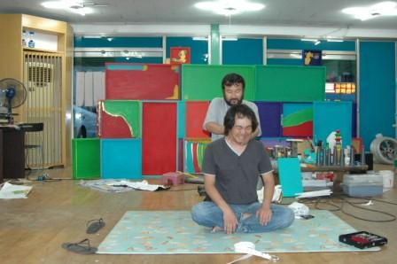
入ってすぐに目の前でマッサージがおこなわれていて困惑しました。
手前にいるのは10月からTAPに来るSAP選出作家のキムさん。
TAPではパフォーマンスをする予定です。
マッサージをしているのは地元のアーティストのキムさん。この方のマッサージは有名な芸能人など、ありとあらゆる人の治療をしているとか。毎日誰かがマッサージしてもらいに訪れているそうです。
入ってすぐに目の前でマッサージがおこなわれていて困惑しました。
手前にいるのは10月からTAPに来るSAP選出作家のキムさん。
TAPではパフォーマンスをする予定です。
マッサージをしているのは地元のアーティストのキムさん。この方のマッサージは有名な芸能人など、ありとあらゆる人の治療をしているとか。毎日誰かがマッサージしてもらいに訪れているそうです。
少し経ってソファで寝ているのを発見しました。
なんでも今日ものすごく大事なプレゼンがあったらしく、お疲れだったそう。
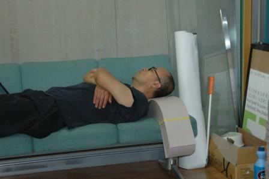
市場の店との間の壁にこんな掲示が。
これは山中カメラさんのパフォーマンスのお知らせと、何か協力してくれる人はここに書いてってかいてるそうです。この横の
掲示にはキムチを持ってきてあげるわ～とかいくつか書き込
みが。この市場の人たちはすごく協力的なんだそうです。
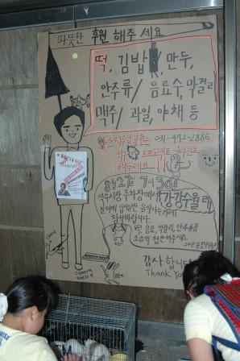
着いたのが遅かったので、もう夜の市場の風景。
韓国の人は夜も終電すぎても屋台で飲んでる光景がみられました。
TAP選出作家の山中さんの作品の一部です。
韓国のお土産で大人気のぶたさん。夢にぶたが出ると宝くじを買ったり、招き猫のようにぶたの置物をおいていたりします。
いろんな色があり、金色が一番縁起がいいそう。
今回山中さんはこのぶたをちょうちんに、韓国テイストを取り入れた盆踊り曲を作曲＆作詞し、SAPTAPの交流展の前日にパフォーマンスをおこないます！
韓国流盆踊りです。
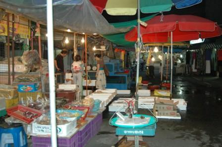
ここでご飯。辛いものがだめな私に合わせてお店を選んでくれました。
ぶた焼肉なのですが、お肉が分厚い。野菜が多い！
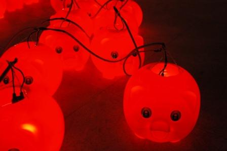
こちらはもう一人のSAP選出作家のデイリーさん。
ドイツに10年いたさいに日本人の友達がいて日本語をマスターしたそう。初日から私もかなりお世話になっています。TAPでは舞台を作り、そこで住民達が音楽をする環境を作りたいということです。
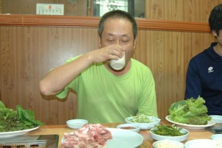
ここからは夜の山中さんプロジェクト。
歌詞を作っています。3番まであって、内容によって歌い手も変わります。
今日は2番の録音。2番はチームTAPです。
ぶたさんの横での録音です。ちなみにぶたの数は108つ。
英語も苦手な私たちは盆の説明がうまく出来ず、108はヒューマンデザイアだと言っています。
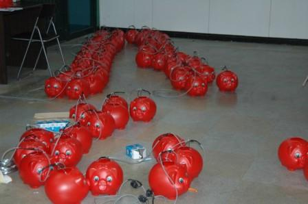
まずは山中先生のお手本から。気持ちよく歌います。
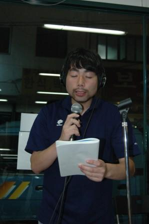
一人ずつの録音なので、照れたり笑ったり。
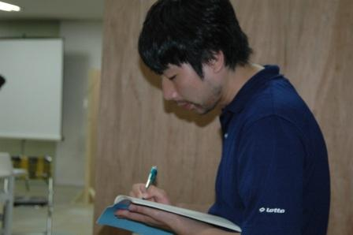
途中、山中さんのチェックが入ったり。
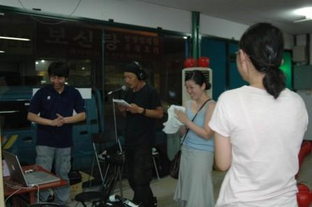
ウヨンが歌ってみたり。
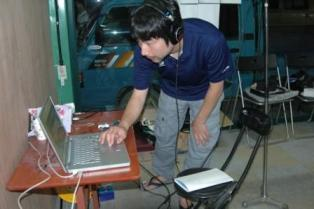
仲良しのチャックはノリノリでアメリカ式合いの手をいれます。このあと外国人たちが次々に自身の合いの手を披露。
イレインは色っぽい合いの手で周囲を盛り上げます。
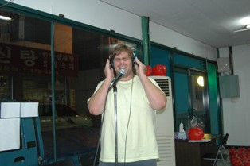
いさおさんの釜山からアンヤンまでの旅は無事に終了し、旅の相棒や映像や写真を展示する予定
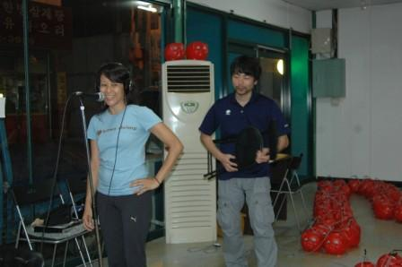 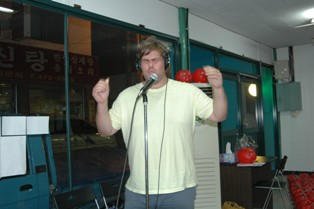
2008-09-02
saptap.egloos.com 에서 옮김